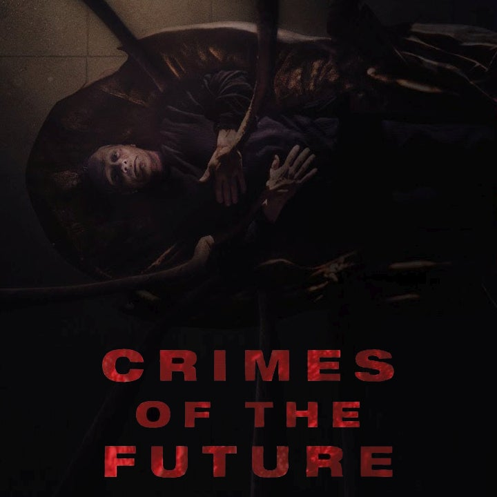
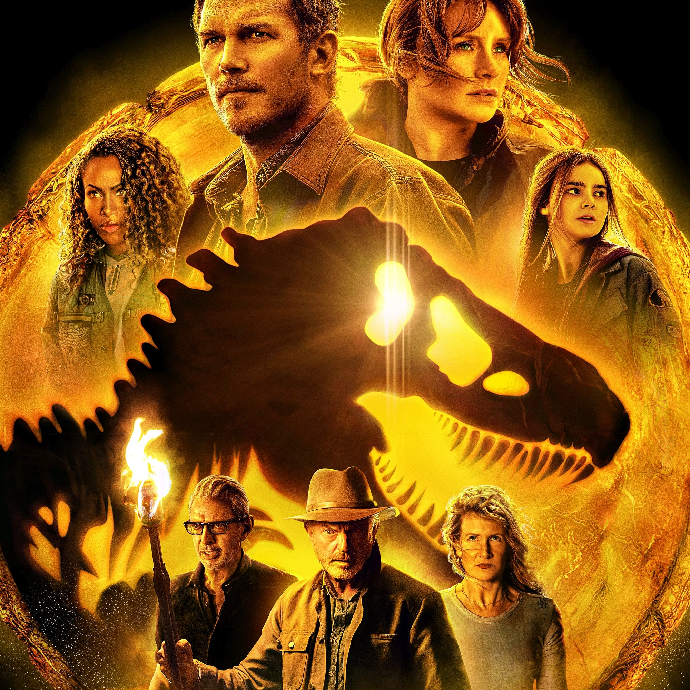

As the human species adapts to a synthetic environment, the body undergoes new transformations and mutations. Accompanied by his partner, celebrity performance artist Saul Tenser showcases the metamorphosis of his organs. Meanwhile, a mysterious group tries to use Saul's notoriety to shed light on the next phase of human evolution.
Release date: May 25, 2022 (France)
Director: David Cronenberg
Distributed by: Canadian Broadcasting Corporation, Neon
Jurassic World Dominion

The future of mankind hangs in the balance as humans and dinosaurs coexist following the destruction of Isla Nublar.
Release date: June 10, 2022 (USA)
Director: Colin Trevorrow
Distributed by: Universal Pictures
Creed III
Creed III is an upcoming American sports drama film directed by Michael B. Jordan, from a screenplay by Keenan Coogler and Zach Baylin, and based on a story outline by Ryan Coogler. Wikipedia
Release date: November 23, 2022 (USA)
Director: Michael B. Jordan
Distributed by: Warner Bros. Pictures
Maverick
Cruise once again plays pilot Lt. Pete "Maverick" Mitchell in the movie, set to open in theaters May 27. After more than 30 years of service as one of the Navy's top aviators, Pete "Maverick" Mitchell is where he belongs, pushing the envelope as a courageous test pilot and dodging the advancement in rank that would ground him. Training a detachment of graduates for a special assignment, Maverick must confront the ghosts of his past and his deepest fears, culminating in a mission that demands the ultimate sacrifice from those who choose to fly it.
 Cruise once again plays pilot Lt. Pete "Maverick" Mitchell in the movie, set to open in theaters May 27. After more than 30 years of service as one of the Navy's top aviators, Pete "Maverick" Mitchell is where he belongs, pushing the envelope as a courageous test pilot and dodging the advancement in rank that would ground him. Training a detachment of graduates for a special assignment, Maverick must confront the ghosts of his past and his deepest fears, culminating in a mission that demands the ultimate sacrifice from those who choose to fly it.
Cruise once again plays pilot Lt. Pete "Maverick" Mitchell in the movie, set to open in theaters May 27. After more than 30 years of service as one of the Navy's top aviators, Pete "Maverick" Mitchell is where he belongs, pushing the envelope as a courageous test pilot and dodging the advancement in rank that would ground him. Training a detachment of graduates for a special assignment, Maverick must confront the ghosts of his past and his deepest fears, culminating in a mission that demands the ultimate sacrifice from those who choose to fly it.